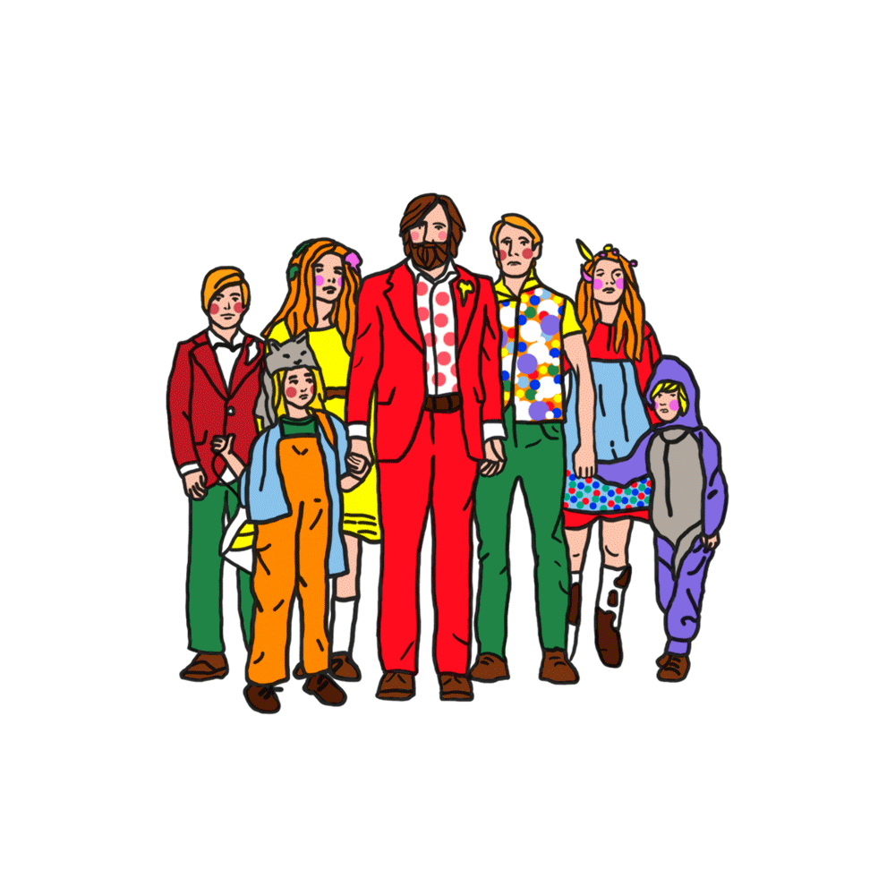

- Jack Skellington, o Rei das Abóboras, se cansa de fazer o Dia das Bruxas todos os anos e
deixa
os limites da cidade. Por acaso, acaba atravessando o portal do Natal, onde vê a alegria do
espírito natalino. Ao retornar para a Cidade do Halloween, sem ter compreendido o que viu,
ele
começa a convencer os cidadãos a sequestrarem o Papai Noel e fazerem seu próprio Natal.
Apesar
de sua leal namorada Sally ser contra, o Papai Noel é capturado e os fatos mostrarão que
Sally
estava certa o tempo todo.
- Ano de Lançamento: 1993
- Gênero: Musical
- Elenco Principal: Catherine O' Hara (Sally), Chris Sarandon (Jack), Ed Ivory (Papai Noel),
William Hickey(Doctor Finklestein).

- Nos anos seguintes à Guerra de Secessão, Jo March e suas duas irmãs voltam para casa quando
Beth, a tímida irmã caçula, desenvolve uma doença devastadora que muda para sempre a vida
delas.
- Ano de Lançamento: 2020
- Gênero: Romance
- Elenco Principal: Eliza Scanlen (Beth March), Emma Watson (Meg March), Florence Pugh (Amy
March),
Saoirse Ronan (Jo March), Timothée Chalamet (Laurie).

- As aventuras de João Grilo e Chicó, dois nordestinos pobres que vivem de golpes para
sobreviver. Eles estão sempre enganando o povo de um pequeno vilarejo, inclusive o temido
cangaceiro Severino de Aracaju, que os persegue pela região.
- Ano de Lançamento: 2000
- Gênero: Comédia
- Elenco Principal: Diogo Vilela (Eurico), Denise Fraga (Dora), Fernanda Montenegro (Nossa
Senhora), Luis Melo (Diabo), Marco Nanini (Cangaceiro), Matheus Natchergaele (João Grilo),
Maurício
Gonçalves(Jesus), Selton Mello (Chicó), Virgínia Cavendish (Rosinha).

- Nas florestas do estado de Washington, um pai cria seus seis filhos longe da civiolzação, em
uma rígida rotina de aventuras. Ele é forçado a deixar o isolamento e leva sua famíola para
encarar
o mundo, desafiando sua ideia do que significa ser pai.
- Ano de Lançamento: 2016
- Gênero: Drama
- Elenco Principal: Annalise Basso (Vespyr), Charlie Shotwell(Nai), George Mackay (Bo),
Nicholas Hamilton (Rellian), Samantha Isler (Kielyr), Shree Crooks(Zaja), Viggo Mortensen (Ben).

- Os moradores de Bacurau, um pequeno povoado do sertão brasileiro, descobrem que a comunidade
não consta mais em qualquer mapa. Aos poucos, eles percebem algo estranho na região:
enquanto
drones passeiam pelos céus, estrangeiros chegam à cidade. Quando carros são baleados e
cadáveres
começam a aparecer, Teresa, Domingas, Acácio, Plínio, Lunga e outros habitantes chegam à
conclusão de que estão sendo atacados. Agora, o grupo precisa identificar o inimigo e criar
coletivamente um meio de defesa.
- Ano de Lançamento: 2019
- Gênero: Thriller
- Elenco Principal: Bárbara Colen (Teresa), Silvero Pereira (Lunga), Sônia Braga (Domingas),
Thomas
Aquino (Acácio), Wilson Rabelo (Plínio).